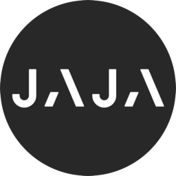
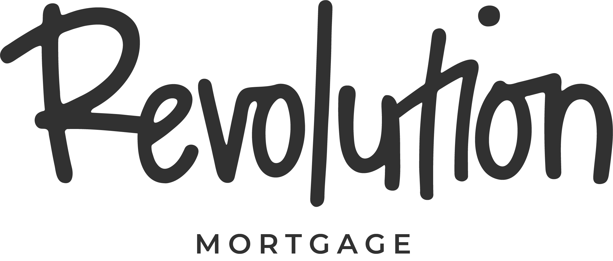

Workflow Engine
Orchestrates multi-step processes across every connected system, end to end.
MOVE FROM HIGH-LEVEL INSTITUTIONAL STRATEGY TO PRODUCTION-READY EXECUTION.


OVERVIEW
We bridge the gap between complex legacy technical stacks and cutting-edge automation. Rather than engineering risky, high-cost software from scratch, we leverage Zoral’s powerful, multi-product Solution Accelerators — including production-ready configurations for Personal Finance, BNPL, Credit Cards, Auto Finance, Mortgage Finance, SME Finance, Credit Analysis, and Loan Origination Systems (LOS)—to deploy battle-tested financial infrastructure rapidly.
By coupling senior-led advisory with these highly configurable product frameworks and the proven engineering depth of Zoral software house, we deliver tailored, compliant business outcomes without the institutional bloat or long timelines of traditional generalist consultancies.
Runs on top of what you already have
Platform
Zoral connects directly to the systems your teams already depend on and layers AI reasoning on top — instead of asking you to replace them.
Inside the layer
Everything Zoral needs to understand your business and act on it, built in and wired together from day one.
Orchestrates multi-step processes across every connected system, end to end.
Applies your business rules and live context to make consistent, explainable calls.
Autonomous agents that carry out work across your stack under human oversight.
A living index of your systems, documents and policies that every engine can query.
Full visibility into what the layer is doing, why, and the impact it's having.
Outcomes
Zoral is built to change numbers leadership actually tracks — not just ship another dashboard.
New AI-driven paths to upsell, retain and convert.
Consistent, auditable decisions across every process.
Manual handoffs replaced by orchestrated workflows.
Ship changes against the layer, not each legacy system.
Faster, more consistent service across every channel.
A platform that scales with you into new markets.
Keep every system you run today. Add the layer that makes them think together.
Request a demo